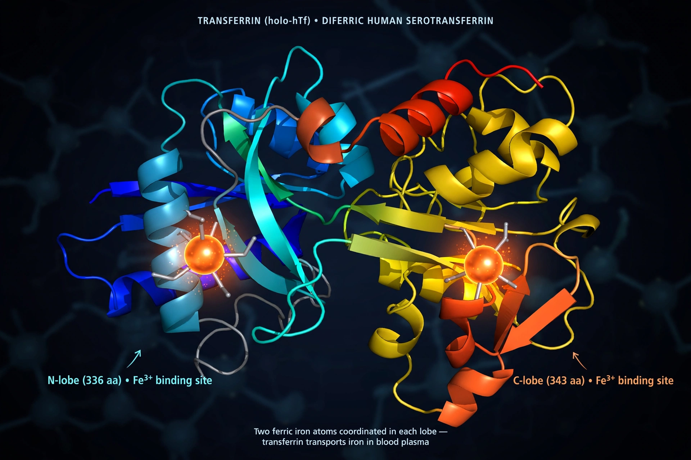

| Transferrin | |
|---|---|
 | |
| Gene | TF, chromosome 3q22.1 |
| Mass | ~79.5 kDa, 679 amino acids |
| Function | Binds and transports iron in blood plasma |
| Normal saturation | 20–50% of binding sites occupied |
Transferrin is a glycoprotein that binds iron ions and transports them through the blood to tissues throughout the body. A member of a family of iron-binding proteins that includes lactoferrin (in milk and secretions) and ovotransferrin (in egg white), transferrin is synthesised mainly by the liver and circulates in plasma at about 2–3.6 g/L. By keeping free iron vanishingly low, it also denies iron to bacteria, contributing to innate immunity ("nutritional immunity").
The protein consists of a single polypeptide chain folded into two homologous lobes, each binding one ferric ion (Fe³⁺) together with a carbonate anion. Transferrin loaded with iron binds the transferrin receptor on cell surfaces — especially on red-cell precursors in the bone marrow, which need iron for haemoglobin — and is taken into the cell by endocytosis. Acidification of the endosome releases the iron; the iron-free protein (apotransferrin) is recycled back to the blood.
Transferrin is measured in iron studies (a blood test panel) as total iron-binding capacity (TIBC) or directly. Transferrin saturation — serum iron divided by TIBC — normally runs 20–50%: it is low in iron-deficiency anaemia (when transferrin levels rise as the body seeks more iron) and high in iron overload such as haemochromatosis, where saturation above ~45% is an early clue. Transferrin falls during inflammation, malnutrition and liver disease because it is a negative acute-phase protein. The rare congenital condition atransferrinaemia causes severe anaemia with paradoxical tissue iron overload. Carbohydrate-deficient transferrin is used as a biomarker of chronic heavy alcohol use.
Serotransferrin (blood), lactotransferrin (secretions, neutrophils) and ovotransferrin (egg white) share the same two-lobed iron-binding design, an ancient molecular architecture found across vertebrates and invertebrates.
See also: Haemochromatosis · Blood test · Medical test